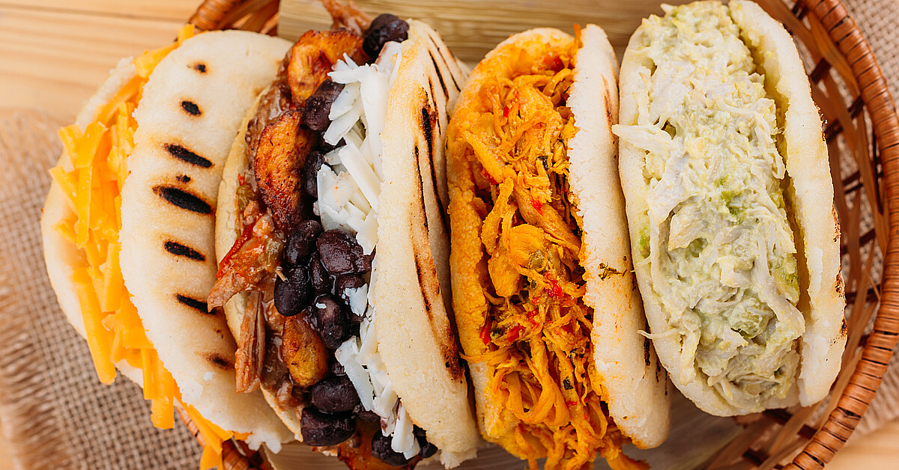
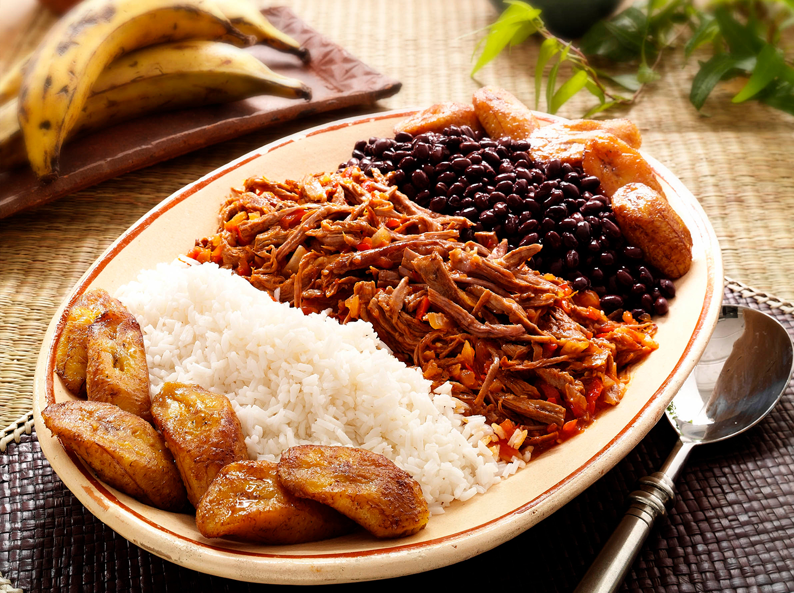

Comida Venezolana - Delicias Nationales
Venezuelan cuisine has a wide variety of rich flavors influenced by indigenous, European and West African cultures.
Arepas
A true Venezuelan classic, regardless of what neighboring countries would say (ikyk)
savory corn cakes made from cornmeal that can be eaten plain, stuffed or fried
Pabellón Criollo
Often considered the national dish.
Components: shredded beef (carne mechada), black beans (caraotas negras), white rice, and sweet fried plantains (platanos)